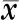
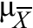
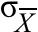
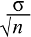
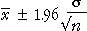

Estimating a population mean
The most commonly estimated parameter for numerical data is the population mean, µ. We now examine how to estimate µ when the population standard deviation, σ, is a known value.
In most practical situations, the population standard deviation, σ, is also unknown and must be estimated. However we leave this type of problem until later in this section.
Active ingredient in medicine
Pharmaceutical companies routinely test their products to ensure that the concentration of active ingredient, µ, is within tight limits. However the chemical analysis is not precise and repeated measurements of the same specimen differ slightly.
One type of analysis gives estimated concentrations of the active ingredient that are normally distributed with standard deviation σ = 0.0068 grams per litre. When a product is tested once, the recorded concentration is therefore
X ~ normal (μ , σ = 0.0068)
A product is tested several times, giving a sample mean concentration .
The sample mean is our best estimate of the population mean, but how accurate is the estimate?
Standard error
We saw earlier that the distribution of is approximately normal, with mean and standard deviation given by the equations
|  | = μ |
|  | = |  |
When a sample mean is used to estimate the underlying population mean, µ, there is an error,
error = − μ
The error distribution is also approximately normal,
| error ~ normal (0, | ) |
The standard deviation of the error distribution is the standard error of the estimator,
| standard error = |
95% bounds for the error
Applying the 70-95-100 rule of thumb to the error distribution,
| Prob( error is between ± 2 | ) is approximately 0.95 |
We can refine this using the properties of the normal distribution. Exactly 95% of values from a normal distribution are within 1.96 standard deviations from the mean, so
| Prob( error is between ± 1.96 | ) = 0.95 |
95% confidence interval
Since will be within 1.96 of µ with probability 0.95, we are 95% confident that µ is in the interval

This kind of interval estimate is called a 95% confidence interval for µ. And we say that the interval has a confidence level of 0.95.
Active ingredient in medicine
A pharmaceutical company analyses one product 16 times to estimate the amount of active ingredient in it. The results of a single analysis are known to be
X ~ normal (μ , σ = 0.0068)
Irrespective of the data, we know that the standard error of is therefore
| = 0.0068 / 4 = 0.0017 |
From this, we can obtain bounds on the error and therefore a confidence interval, as illustrated below.
Click Another sample to see the confidence interval that would result from a different 16 analyses of the same product. Observe that the width of the confidence interval remains the same.
Change the sample size, n, and observe that the confidence interval becomes narrower as the sample size increases.